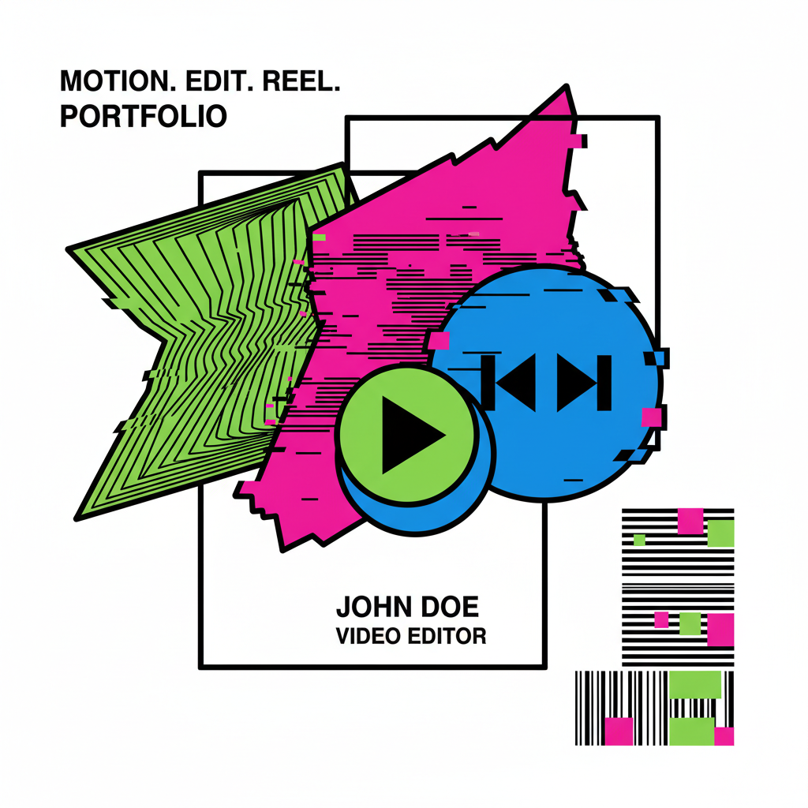

MUSIC VIDEO
Neon Nights
Editing, Color Grading
Editing, Color Grading

VFX, Sound Design

Direction, Editing

Color, Motion Graphics

I'm Alex, a video editor obsessed with rhythm and impact. I don't just cut footage; I craft narratives that punch through the noise.
Adobe Premiere Pro / After Effects / DaVinci Resolve / Cinema 4D